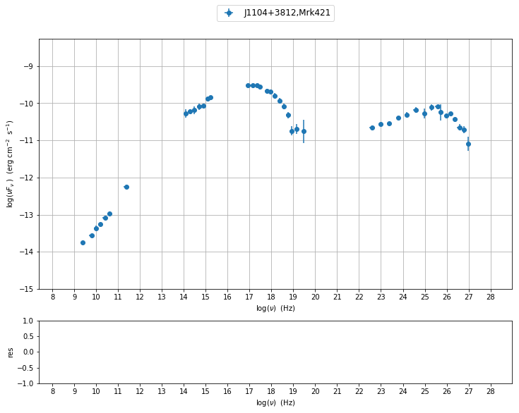

In [1]:
import BlazarSEDFit as SEDFit
SEDFit.set_workplace(out_dir='first-Trial',flag='Mrk501')
SEDFit.test_SEDs
directory first-Trial already existing
removing existing dir
the directory first-Trial has been created
Out[1]:
['/Users/orion/anaconda2/lib/python2.7/site-packages/BlazarSEDFit/test_data/SEDs_data/SED_3C345.dat',
'/Users/orion/anaconda2/lib/python2.7/site-packages/BlazarSEDFit/test_data/SEDs_data/SED_MW_Mrk421.dat',
'/Users/orion/anaconda2/lib/python2.7/site-packages/BlazarSEDFit/test_data/SEDs_data/SED_MW_Mrk501.dat']
In [2]:
mySED=SEDFit.test_SEDs[1]
mySEDdata=SEDFit.ObsData(data_file=mySED)
=============================================================================================
*** getting meta-data from file header
set md z to 0.0308
set md restframe to obs
set md data_scale to lin-lin
set md col_types to x,y,dy,data_set
set md obj_name to J1104+3812,Mrk421
=============================================================================================
[]
=============================================================================================
*** loading data ***
---> loading data for file=/Users/orion/anaconda2/lib/python2.7/site-packages/BlazarSEDFit/test_data/SEDs_data/SED_MW_Mrk421.dat
---> found these col ID=[0, 1, 2, 3] and names=['x', 'y', 'dy', 'data_set']:
---> z=3.080000e-02
---> restframe=obs
---> obj_name=J1104+3812,Mrk421
---> data_scale=lin-lin
nu_data x
nuFnu_data y
dnuFnu_data dy
data_set data_set
---> data len=112
---> Settin UL for val 0
---> Settin UL for val 0.2
5, [ 9.36164097 9.42155408 9.68115437 9.68169692 9.68516397
9.88640386 9.91736611 9.92074233 9.92369254 9.92427898
10.0190714 10.04523611 10.16333166 10.17390881 10.1760817
10.1760817 10.18645992 10.34241814 10.34626611 10.36192473
10.37657221 10.5049378 10.56820172 10.63557281 10.63560386
10.63560386 11.36172784 14.1476145 14.15218006 14.26561016
14.38080202 14.38216623 14.52014291 14.57266033 14.6374482
14.6374482 14.66196206 14.67335245 14.67335245 14.71633712
14.73737611 14.73737611 14.79796843 14.82244074 14.83619856
15.07948442 15.14089503 15.21226353 16.92176631 17.00176529
17.08176448 17.16176318 17.24176233 17.32176139 17.40176041
17.48175942 17.78669947 17.86408387 17.92210689 17.94146835
17.96990766 18.01301302 18.01885272 18.0522706 18.08831544
18.0962372 18.12163796 18.15262433 18.17362151 18.18158322
18.20876615 18.23437984 18.25100615 18.25859802 18.28156602
18.30340775 18.32422976 18.32839041 18.34412395 18.36317069
18.39833139 18.44734257 18.504513 18.55857838 18.5680578
18.61315063 18.62373708 18.68230197 18.69856453 18.77824476
18.81555424 18.93170083 19.14680748 19.46704604 22.58329129
22.98330593 23.38348378 23.78346513 24.18345036 24.58345553
24.9834565 25.38242592 25.38345486 25.58242622 25.78242697
25.78345384 25.98242651 26.18242635 26.38242592 26.58242622
26.78242697 26.98242651]
=============================================================================================
In [3]:
myPlot=SEDFit.Plot(mySEDdata,interactive=True)
myPlot.add_data_plot(mySEDdata,autoscale=True)
running PyLab in interactive mode

In [ ]:
In [4]:
#mySEDdata.set_error(0.1)
myPlot=SEDFit.Plot(mySEDdata,interactive=True)
myPlot.add_data_plot(mySEDdata,autoscale=True)
mySEDdata.group_data(bin_width=0.2)
mySEDdata.add_systematics(0.1,[10.**6,10.**19])
myPlot.add_data_plot(mySEDdata,label='grouped+syst')
running PyLab in interactive mode
=============================================================================================
*** binning data ***
---> N bins= 89
---> bin_widht= 0.2
=============================================================================================

In [5]:
SEDShape=SEDFit.SEDShape(mySEDdata)
SEDShape.eval_indices()
myPlot=SEDFit.Plot(mySEDdata,interactive=True)
myPlot.add_data_plot(mySEDdata,autoscale=True)
for model in SEDShape.index_models:
myPlot.add_model_plot(model,label=model.name,line_style='--')
=============================================================================================
*** evaluating spectral indices for data ***
---> range for indexradio updated to [6.000000,10.000000]
the directory first-Trial/spectral-indices-best-fit/ has been created
--->fit failed for radio
---> range for indexradio_mm updated to [10.000000,11.000000]
directory first-Trial/spectral-indices-best-fit/ already existing
removing existing dir
the directory first-Trial/spectral-indices-best-fit/ has been created
--->fit failed for radio_mm
---> range for indexmm_IR updated to [10.300000,13.700000]
directory first-Trial/spectral-indices-best-fit/ already existing
removing existing dir
the directory first-Trial/spectral-indices-best-fit/ has been created
--->fit failed for mm_IR
---> range for indexIR_Opt updated to [12.500000,14.500000]
directory first-Trial/spectral-indices-best-fit/ already existing
removing existing dir
the directory first-Trial/spectral-indices-best-fit/ has been created
--->fit failed for IR_Opt
---> range for indexOpt_UV updated to [14.000000,16.000000]
directory first-Trial/spectral-indices-best-fit/ already existing
removing existing dir
the directory first-Trial/spectral-indices-best-fit/ has been created
--->fit failed for Opt_UV
---> range for indexBBB updated to [14.800000,16.200000]
directory first-Trial/spectral-indices-best-fit/ already existing
removing existing dir
the directory first-Trial/spectral-indices-best-fit/ has been created
--->fit failed for BBB
---> range for indexUV_X updated to [15.000000,17.500000]
directory first-Trial/spectral-indices-best-fit/ already existing
removing existing dir
the directory first-Trial/spectral-indices-best-fit/ has been created
--->fit failed for UV_X
---> range for indexX updated to [16.000000,19.000000]
directory first-Trial/spectral-indices-best-fit/ already existing
removing existing dir
the directory first-Trial/spectral-indices-best-fit/ has been created
--->fit failed for X
---> range for indexFermi updated to [22.380000,25.380000]
directory first-Trial/spectral-indices-best-fit/ already existing
removing existing dir
the directory first-Trial/spectral-indices-best-fit/ has been created
--->fit failed for Fermi
=============================================================================================
running PyLab in interactive mode

In [ ]: